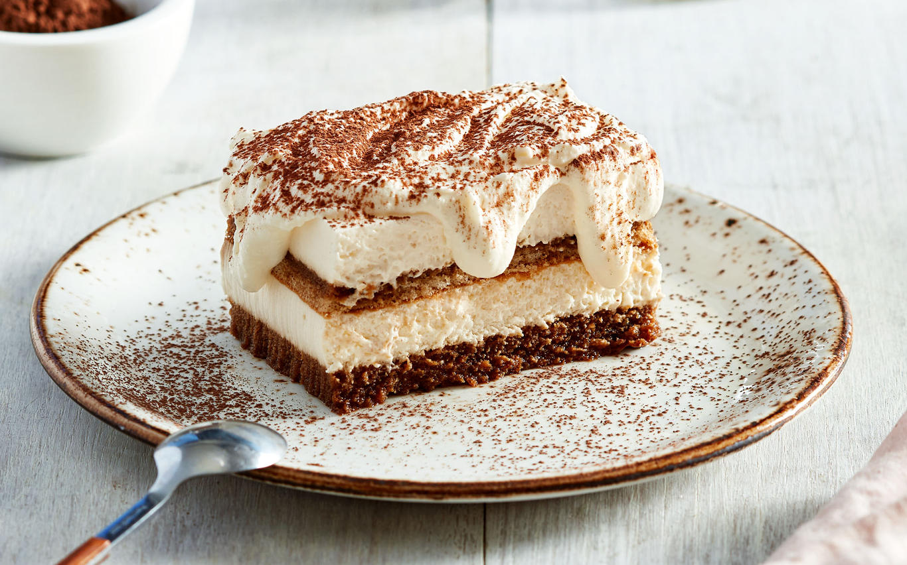

Tiramisu
Vamos a preparar la auténtica receta del tiramisú casero. Un postre
que no pasa de moda, además de sencillo y delicioso, que podemos
versionar como más nos guste.

Si deseas conocer su elaboración te damos todos los detalles a
continuación.
Receta tiramisú
Flan
El flan de huevo es un postre delicioso con el que los peques van a
chuparse los dedos. Este flan casero, además de ser muy bonito en
cuanto a presentación, ¡está delicioso! Suave, cremoso… ¡es un manjar!
La receta de flan de huevo tradicional lleva muy pocos ingredientes:
leche, azúcar, huevos y canela para saborizar.

Si deseas conocer su elaboración del flan te damos la información a
continuación.
Receta flan